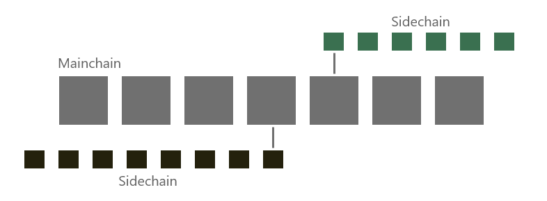

Lisk
Nazwa:
Lisk (LSK)
Treść:
Może na samym początku zacznijmy od przytoczenia zarysu historii tej kryptowaluty. W styczniu 2016 Max Kordek oraz jego wspólnik Oliver Beddows uruchomili zbiórkę ICO, w której zebrali łącznie 14 009 BTC oraz 80 MLN XCR.W maju tego samego roku została stworzona główna sieć blockchain Liska oraz została powołana fundacja z siedzibą w Szwajcarii, która odpowiada za rozwój kryptowaluty.Może przejdźmy teraz do technicznych aspektów.Jak właściwie zbudowany jest blockchain Liska? Okazuje się, że działa zupełnie inaczej niż łańcuch bloków w najpopularniejszej kryptowalucie - mowa tu oczywiście o Bitcoin'ie. Pozwólcie, że zobrazuję to info-grafiką.
Na powyższym przykładzie widzimy jeden główny łańcuch bloków oraz dwa tzw. "Sidechainy". Max Kordek zauważył problem skalowalności w reszcie projektów i postanowił rozwiązać (a raczej developerzy) ten problem poprzez zbudowanie blockchaina tak, aby główny mainchain i jego wydajność nie była zależna od reszty tworzonych bloków. Cały projekt wydaje się być ciekawy.Po wydaniu SDK będzie możliwość tworzenia "zdecentralizowanych" aplikacji w języku JavaScript, którego ekosystem prężnie się rozwija.Gdy developerzy dostarczą gotowy produkt, wydaje mi się że cena może osiągnąć nowe ATH, pamiętajmy że cała branża związana z blockchainem jeszcze raczkuje, a my jesteśmy świadkami jak tworzy się nowy przełom technologiczny mianowanay przez niektórych jako "Internet drugiej generacji".
Aktywność developerów:
Przyjrzyjmy się aktywności developerów odpowiadających za aspekty techniczne kryptowaluty możemy to zobaczyć na ich officjalnym Githubie TUTAJ.Jak widać projekt idzie do przodu i nie jest kolejnym porzuconym wrakiem.Team liska składa się moim zdaniem z doświadczonych developerów i wydaje mi się, że może z tego wyjść dobre środowisko do tworzenia aplikacji "dApps".